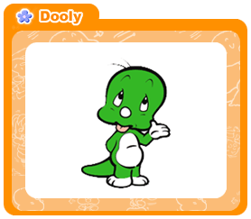
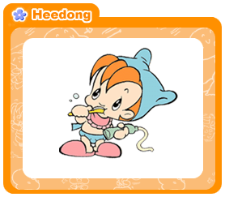
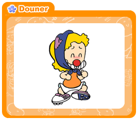
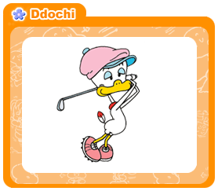
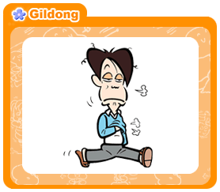
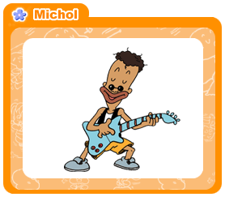

| 
|
고향 : 지구 어딘가..
나이 : 몇십만살은 됬을듯.. 그러나, 냉동상태로 보전되
어있었기 때문에 생채나이는 그렇게 많지는
않은듯..
특기 : "호이!"라고 외치며 초능력을 쓸 수 있음
특징 : 푸른 피부, 툭튀어나온 배, 두툼한 꼬리와
체온을 식힐려고하는건지, 파충류특유의 감각인
미각을 살리는건지 혀를 내밀고 있음..
날름거리지는 않음..
종족 : 공룡 (초식공룡:대단히 커질것 같았으나, 후기
만화를 보면 눈만나빠지고, 몸은 별로 안카졌음,
역시 생채실험의 영향인듯)
천적 : 은행건물을 번쩍 들정도로 힘은 강하나 의외로
약한데가 많음
과거에는 육식공룡이었을듯 하나, 지금은 고길동
이라는 인간과 희동이한테 약함
식성 : 어미의 캐릭터를 보아 브론토사우르스같은 초식
동물같으나 생채실험을 당해 입맛이 변질되었는듯
라면과 밥등 안가리는거 없이 잘먹음
이것이 둘리라는 캐릭터 입니다. 외계인에게 생채실험을
당한후, 빙하기때 살아남아 (빙하속에서 냉동된상태..)
어찌어찌하다 서울로 와 영희와 철수에게 발견되어 키
워집니다. 아니 들러붙는다는 말이 더 정확할지도..
자라서는 무능력한 공처가가 되어 우리시대의 가장을
대표하기도 하는 캐릭터 입니다.
| 
|
고향 : 지구 대한민국
나이 : 5~7세(추정)
특기 : 깨물기, 할퀴기, 울기, 땡깡부리기
특징 : 귀여워 보이는 외모에 실로 엽기적인 성격을
가지고 있음
둘리의 만화가 진행이 계속되어도 끝까지
기저귀와 젖꼭지를 버리지 못하는것을 보아
성장이 매우 느리거나 같거나 정신적으로
문제가 있는듯..
종족 : 인간
천적 : 없음.. 실로, 막강한 전투력을 가지고 있으며,
혼자서 사마구 외계인 부대를 상대하고, 세살때
자동차를 들고 당겼던
도우너를 때려눕히는것으로 보아 사상 최강의
캐릭터가 아닌지..
식성 : 우유를 먹을것같으나 밥도 잘먹는것 같음..
희동이란 케릭터입니다. (성은 불명)
귀여워보이는 얼굴.. 속으면 안됩니다. ^^
그러나 불행한 성장과정을 가지고 있는 캐릭터..
길동의 조카이나, 어머니(철수의 고모)가 미국에 있는
바람에 길동의 집에 맡겨져 키워짐. 나이가 꽤 되도록
어머니가 거의 돌아오지 않는걸보아 무언가 문제가 있다
고 생각되는 가정환경.
나중에 희동이 동생까지 보내지니.. (양동이던가. 기억이
잘안남) 아무래도 부모에 대한 불신이 있으리라고 사료됨.
그래서인지 기저귀와 젖을 잘 못때고 있고,
정에 굶주려 있는것 같습니다.
우리시대의 아이들의 상인지도..
| 
|
고향 : 깐따삐아별
나이 : ??
특기 : 힘이 셈.. 성격이 더러움
특징 : 빨간코 노란 곱슬머리와 툭튀어나온 배
종족 : 외계인
천적 : 희동이와 길동이
식성 : 뭐든 먹음.. 심지어는 먹을수 없을것 같은것도
먹을수 있음
도우너라는 캐릭터 입니다.
깐따빠이별에서 타임코스모스고장으로 지구에 불시착.
희동이가 타임코스모스를 고장내서 집으로 가기가 힘들
어보임..
인간을 애완동물로 알고 있으나,
(후에는 이미 눈치 깠을듯)
상당한 힘을갖고있고, 자기네 종족은 3살이면 자동차를
들수 있다고함.. 그
러나, 후에 사마구별에 의해 깐따삐아별도 위기
에 처해 있음을암..정치적으로 깐따삐아별도 그리 안정
적인 상황은 아닌듯..
그곳의 왕자라는 얘기도 있고, 제법 잘살았던것으로 추정
| 
|
고향 : 지구 아프리카
나이 : ??
특기 : 원반돌리기, 서커스
특징 : 뻣뻣한 털 노란 부리..
종족 : 타조
천적 : 희동이와 길동이
식성 : 역시 잡식
도우너라는 캐릭터 입니다.
캐릭터중에 유일한 여자이나.. 별루 여자라고
신경쓰이지 않는 캐릭터 ^^
허영심많구... 욕심이 가장 많은 캐릭터입니다.
연애감정따위는 눈꼽만치도 볼수없는 만화라.. ^^;
여성캐릭터라해도 별다른것은 없습니다.
오히려 여성인권에 대해 부르짖을만한
그런 캐릭터입니다.
말발은 둘리가 상대두 안되는듯..
희동이한테 덤볐다가 털까지 뽑히고선 희동이한테는
절대 안덤빔.
닭이니.. 새라서.. 음식으로서 많이 묘사가 되어
목숨의 위협을 만화중에 가장 많이 느낌.
| 
|
고향 : 지구 대한민국
나이 : 30대 말 ?
특기 : 연탄집게 검술, 베개던지기
특징 : 지저분하고, 게으름, 성격이 매우 더러움,
짱구머리, 납작코
전투력은 엄청난듯.. 얼음별 대모험에서는 우주도
구하고.. 염라국에서는 염라병졸들과도 싸우고,
염라대왕을 인질로 잡을정도로 상식을 벗어난 인간
종족 : 인간
천적 : 부장님과 부인
식성 : 역시 잡식
길동이라는 캐릭터 입니다.
맨날 둘리애들에게 신경질 내며 살지만, 그렇게 객식구를
많이 들이는것을 보면 속으로는 따뜻한 사람인듯..
그러나 부장님한테 치이고, 자식들한테는 별로 존경도
못받는 만년과장..
후에는 머리가 벗겨지고, 배나오는..
머. 말년도 좋지않군요.어캐생각하면 좀 비참한 캐릭터지
만, 삶의 집착이 강하고,
나름대로 정과 풍부한 한국인다운 표정이
숨겨져 있는 캐릭터
| 
|
고향 : ??
나이 : 20대? 10대?
특기 : 노래부르기, 악기연주, 약간의 춤
특징 : 둘리를 사부로 모실정도로 순수함..
까만 피부.. 한국말을 잘 구사하는것으로
보아 튀기(혼혈)로 사료됨.
종족 : 인간
천적 : ?
식성 : 잡식
아주 순진한 캐릭터.. 그러나 꿈을 향하는 모습
은 아름답다.
어른이되어 돈을 아주 많이 번다. 그러나 그 순수함
을 잃어버리는듯.. 아들은 오렌지족이 되버리고 만다.
| | | | | |
이상, 아기공룡둘리라는 만화의 캐릭터입니다.
사실 에니메이션으로 제작되어 많이 아동만화로 알려져 있지만, 실상을 뜯어보면
아동만화로 보기가 힘든것 같다는 개인적인 생각입니다.
어찌해서 부모에게 버림받은 아이와 천애고아들, 그리고 혼혈아, 그리고 무시받는
가장을 주인공으로 아동만화에 감히 내세울 생각을 합니까.. --;
또한 만화책을 보면 사회적 이슈도 많이 다룹니다.
걸프전 당시에는 전쟁을 체험해보기도 하고 김수정씨 나름대루의 위트로, 나름대로
가슴아픈 이야기를 웃음으로 잘 그려 내기도 합니다.
이만화를 보면 한바탕 웃어 젖힐만한 위트가 넘치지만, 다보고나면, 그건 우리네
삶의 모습이란 것을 깨닫고선 슬퍼지기까지 해버립니다.
정말 이만화를 보면 한국의 해학 이라는것을 느끼게 합니다.
후에는 베이비사우르스돌리 라는 이름으로 둘리의 아이들세대의 이야기가 나옵니다.
배고픔을 모르고 자란세대.. 그걸 보면 둘리의 캐릭터는 확실해 집니다.
김수정씨가 인간을 그리면, 당시 너무 탄압을 받아서 결국 둘리라는 캐릭터로 우리
인생살이를 그려 봤다고 하더군요.
이 작품을 보고 있노라면 작가정신이라는것에 숙연해 지곤 합니다.
요즘은 거의 아동물로만 재생산되고 있던데 한편으로는 아쉬움도 있습니다.
|